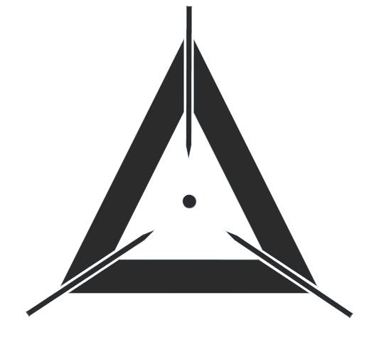
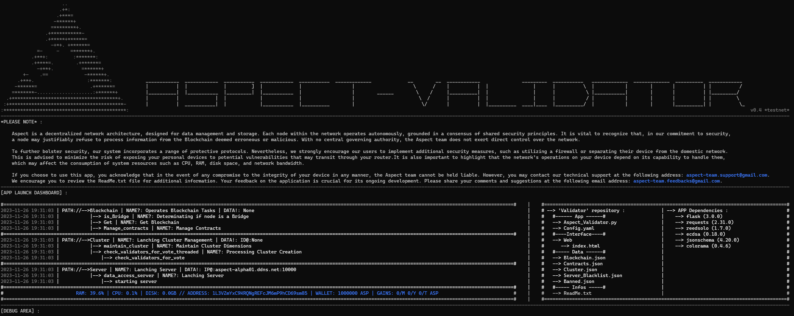
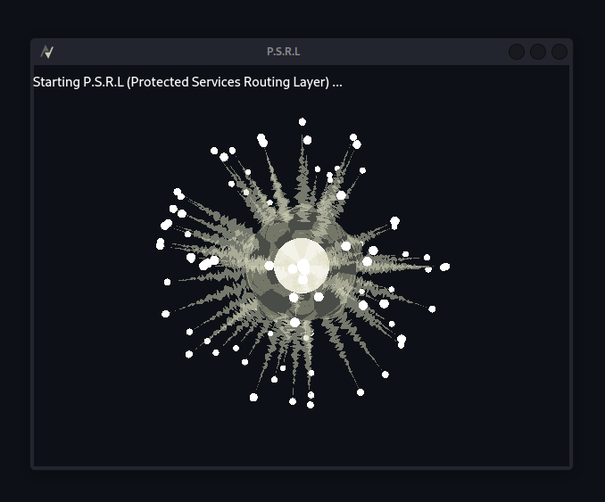
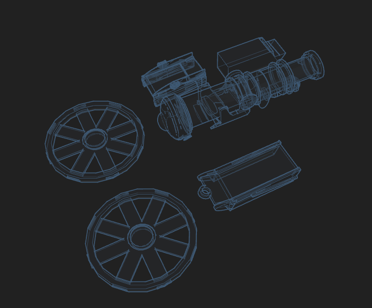

CREUZEAU--MAUBERT ROMAIN
Développeur Logiciel / Cybersécurité

Delta_0ne
UNE PARTIE DE MES PROJETS :
SENSE
Sense est un environnement d'exécution avancé pour l'intelligence artificielle intégrant une IA . Cette dernière est capable de convertir des problèmes spécifiques en réseaux neuronaux modulaires, évolutifs et prêts à l'emploi. Grâce à sa capacité à mémoriser des "souvenirs stratégiques" sous encapsulés, Sense peut se développer de manière autonome, sans nécessiter d'interventions extérieures.
Cette plateforme est conçue pour une compréhension approfondie des problématiques de diverses natures, se montrant particulièrement performante dans l'exécution de tâches ultra-spécifiques ou innovantes, là où la rareté des données représente un défi majeur. Sa faculté d'adaptation lui permet de gérer simultanément plusieurs problèmes et de s'ajuster dynamiquement à son environnement, ce qui en fait un outil extrêmement efficace dans des contextes en constante évolution.

Aspect
Aspect est une blockchain totalement décentralisée, conçue pour le stockage de données et le développement d'applications décentralisées (Dapps). Sa structure repose sur l'intégration de trois catégories de nœuds : les validateurs, les ponts (bridges) et les nœuds de stockage (storage_nodes), chacun opérant de manière autonome tout en adhérant à un mécanisme de consensus partagé. Semblable à des plateformes telles que Bitcoin ou Ethereum, Aspect se positionne comme une blockchain principale, dotée de ses propres règles, blocs et dispositifs.
Concernant l'interface utilisateur, l'image présentée correspond à celle du validateur (CLI), qui dispose également d'une interface graphique (GUI), à l'instar des autres applications constituant l'écosystème Aspect. Il est important de noter que les interfaces graphiques des applications n'ont pas été développées par moi-même, raison pour laquelle elles ne sont pas incluses ici. Aspect représente à ce jour mon unique projet personnel réalisé en collaboration, impliquant une équipe de deux personnes. Mon rôle dans ce projet a été de concevoir tous les éléments à l'exception des GUIs.


P.S.R.L
Le PSRL (Protected Services Routing Layer), ou Passerelle en français, est conçu comme une couche de routage dédiée à l'accès sécurisé de services. Cette technologie me permet de regrouper tous mes projets au sein d'une interface unique et compacte. Son principe de fonctionnement est intuitif : l'interface utilisateur, présentée ici dans son état verrouillé, requiert la sélection de sphères blanches orbitant autour d'un noyau central, dans un ordre spécifique. Cette séquence sert de mot de passe. Alternativement, il est possible d'utiliser un dispositif amovible pour faciliter la connexion, particulièrement utile lorsque la séquence de déverrouillage, impliquant un grand nombre de sphères, s'avère difficile à mémoriser. Une fois l'accès établi, les services stockés localement sont déchiffrés. La sélection d'un service déclenche son ouverture ou son téléchargement via une connexion sécurisée au serveur distant détenteur du service. À l'avenir, j'envisage d'intégrer de nouvelles fonctionnalités afin de permettre une centralisation et une intégration plus poussées des données de services différents.


Maquette de canon 120c
Cette pièce représente un modèle de canon destiné à l'impression 3D et à l'assemblage, conçu à la demande à partir d'une image initiale. j'ai jugé bon de la mettre ici car elle est quelque peu complexe, et donne un exemple quant à mon travail en modélisation 3d de pièces complexes, Bien que mes projets similaires remontent à plus de deux ans, ma passion pour la modélisation 3D ne s'est pas estompée. En effet, n'ayant pas de compétences avancées en design 2D numérique, je conçois tous mes logos, icônes, et designs en 3D, pour ensuite, si nécessaire, les convertir en 2D par aplatissement. Mon parcours dans le domaine de la modélisation a débuté avec Tinkercad, pour sa simplicité d'utilisation, avant de progresser vers des logiciels plus professionels comme Blender(que je ne maîtrise plus vraimment), FreeCad, et enfin Fusion360.
e-mail: romain.creuzeau.pro@gmail.com | discord(pro): romain_czo
 HTML
HTML
 CSS
CSS
 Python
Python
 SQL
SQL
 OpenGl
OpenGl
 Fusion360
Fusion360